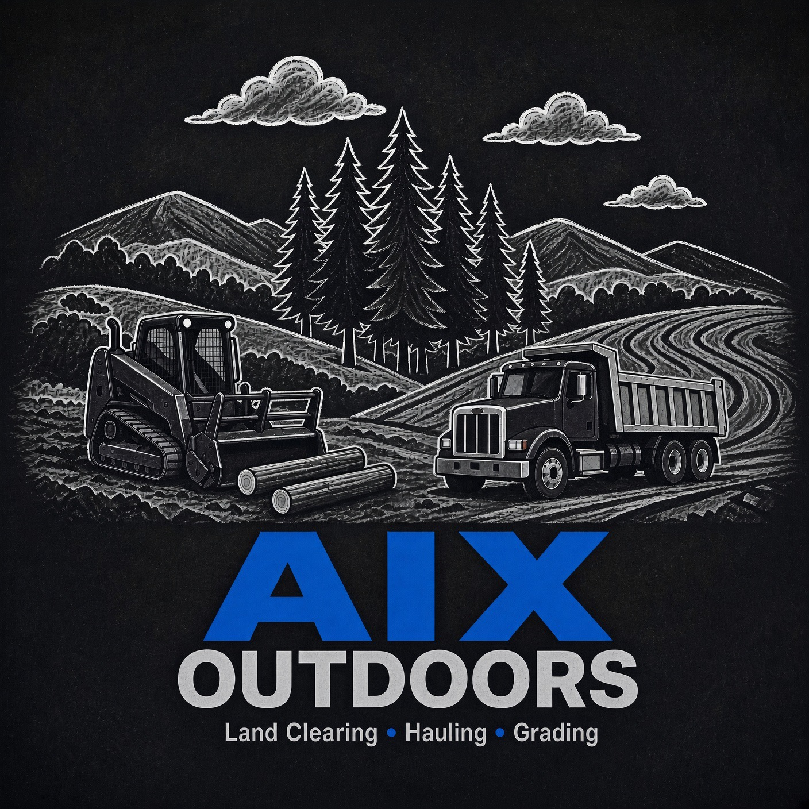

Field service
Ground Clearing
Brush and thickets mulched in place so you can walk, plant, or maintain again.

Serving landowners within 100 miles of Burlington, Iowa
AIX Outdoors is a land-management contractor. You hire us to clear brush, cut trails, install feeding plots, manage stand access, mow large plots, resurface gravel driveways, and haul material — on your farm, recreational ground, or rural acreage. We travel to your property. Free estimates.
Why landowners call
If your property is stuck in one of these, that is the job — we bring the machines and finish the work on your land.
Potholes, no crown, failing culvert — your lane will not carry a trailer through mud season.
Fence lines, timber edges, and corners lost to hedge, briars, and saplings you cannot walk or mow.
No quiet way in, mud holes, ruts, or a cut that erodes every spring.
Wrong spot, wrong wind, poor soil, or a seed-bag layout that never hunted.
CRP-style ground going to brush, roadsides nobody keeps up, too rough for a yard mower.
Nowhere to dump on site, stone that has to come from a pit, spoil with no home.
What you can hire
One-line outcomes landowners care about. Open a service page for scope and sample ranges — or just call.
Brush and thickets mulched in place so you can walk, plant, or maintain again.

Quiet, durable paths across your acreage that hold through mud season.

Food plots sized and sited to your ground — not a seed-bag photo.
Lanes, approaches, and pads so your stands hunt the way you planned.

Acreage mowing that keeps your fields and edges from going back to brush.
Crown, ditch, and stone so your driveway survives harvest and mud season.

Haul-off and stone delivery when mulch-in-place is not the finish you want.
Simple process
Three steps. You stay the landowner — we show up as the contractor and do the work on your property.
Nearest town, a few photos, acres if you know them, and the finish you want — clearing, trails, plots, driveway, haul, or a mix.
We scope access, machine fit, and timeline. Sample ranges on this site are for orientation only — your estimate is written for your job.
Crew days in weather windows. Mulch, cut, plant, mow, gravel, or haul as quoted. Closeout photos when the job wraps.
Proof
Before/after stills and service groups in the gallery. Iowa farm and timber photos stand in for tagged closeouts in this sample — captions are illustrative until original job photos replace them.

Service area
Working radius is about 100 miles of Burlington, IA 52601 — southeast Iowa and nearby Illinois and Missouri. We do not own a hunting farm; we contract on yours. Cedar Rapids sits outside the ring.
Quick answers
You hire us. AIX Outdoors is a land-management contractor. We travel to your property within ~100 miles of Burlington and do the work you scope — clearing, trails, plots, stands, mowing, driveways, hauling.
Acreage, density, terrain, access, stone needs, and the finish you want. Sample ranges on this site are for orientation only — not a bid. Your free estimate is written for your job.
Default on clearing is mulching in place as a natural mulch layer. Haul-off and stone delivery are the dump-truck line when that is what you want.
If your pin is within about 100 miles of Burlington 52601, ask. Cedar Rapids is outside. Edge towns are case by case — see the service-area page.
319-750-1530 · Quality work. Honest pricing. Locally owned & operated.